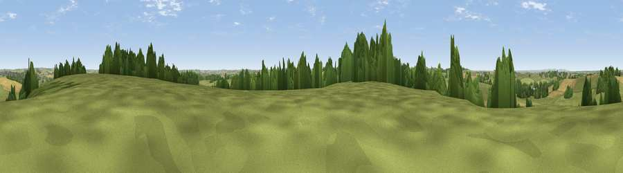

Viewpoint near Gumley
#34257 in England · top 55% of its area beats it · near GumleyThe view, rendered

A 360° render of this exact spot computed from the terrain model, tree cover and land cover — summer colours, afternoon light, calibrated against photographs of famous viewpoints. Real trees, hedges and buildings will differ in detail.
The panorama
Grey silhouette: terrain skyline in each direction (720 bearings, Earth curvature and refraction included). Dashed green: skyline with trees (+15 m) and buildings (+8 m) as obstacles. Blue strip: how far the ground is visible on each bearing.
Where the view opens
Wedge length = distance to the farthest visible ground on that bearing (vegetation-aware). Rings at 10, 25 and 50 km.
What fills the view
59% grassland · 29% cropland · 9% woodland · 1% built-up ·
Angular shares of the visible panorama (visual magnitude), not map area. Landscape diversity 0.43 (0–1 Shannon).
Key numbers
More beautiful places nearby
The staircase of upgrades: each row has a higher view potential than everything closer. Driving times are estimates from straight-line distance, calibrated against real road routing — check an actual route before setting out.
| Place | Direction | Drive | Score |
|---|---|---|---|
| Smeeton Hill | N · 1 km | ~3 min | 41.4 |
| Burnmill Hill | ESE · 6 km | ~12 min | 43.7 |
| Viewpoint near Sibbertoft | SSE · 7 km | ~15 min | 48.3 |
| Viewpoint near Sibbertoft | SSE · 8 km | ~15 min | 48.8 |
| Viewpoint near Cold Ashby | SSW · 14 km | ~25 min | 61.7 |
| Viewpoint near Burrough on the Hill | NNE · 23 km | ~39 min | 66.0 |
| Old John | NW · 26 km | ~42 min | 70.3 |
| Broombriggs Hill | NNW · 29 km | ~45 min | 74.4 |
52.50576, -1.00806 · source: screening · position refined by local search. Computed location — check access rights before visiting.